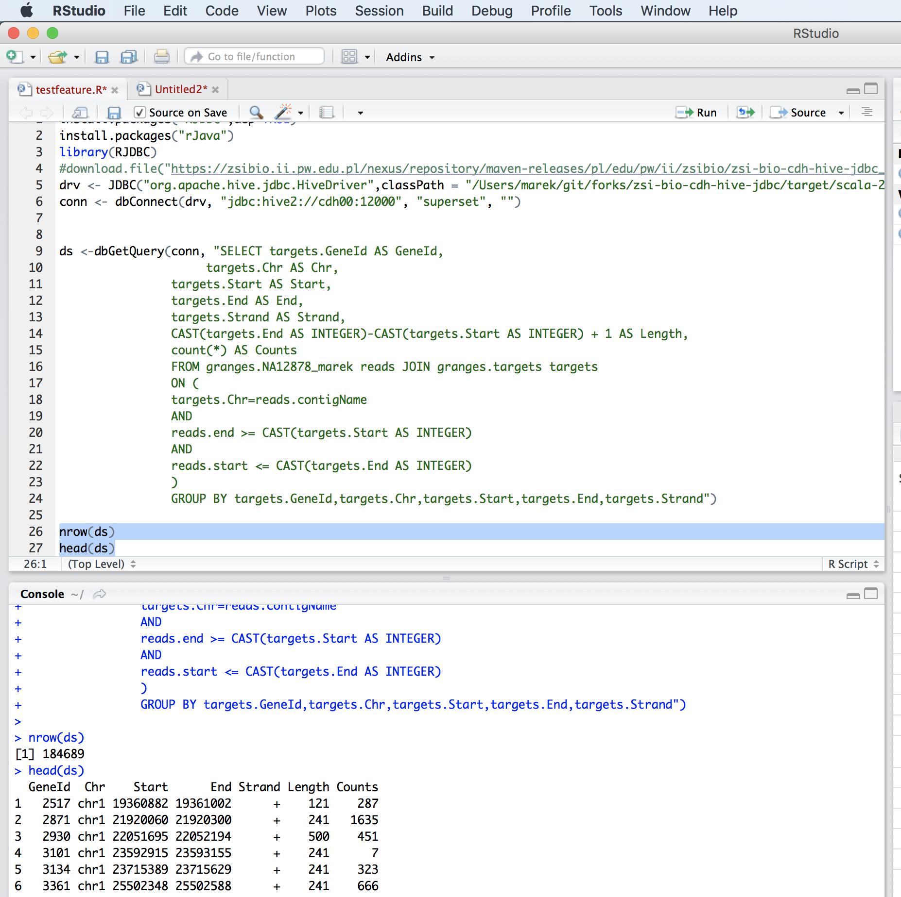

3 Usage¶
SeQuiLa can be used in different ways. Specifically it supports ad-hoc research, which is typically focused on quick analysis on files. Depending on your preferences you can use predefined scripts (findOverlaps and featureCounts) or write your own code snippets within spark-shell or our bdg-shell. Additionally SeQuiLa also can be used along with your existing applications written in Scala/Spark, R or any other language/platform. Please see details below.
3.1 Ad-hoc analysis¶
For ad-hoc analysis SeQuiLa provides two usage patterns:
3.1.1 Using predefined scripts in docker container¶
In SeQuiLa’s docker image are two predefined scripts written to be executable from commandline in good-old fashion. No need of Scala and Spark is needed.
Sample usage of SeQuiLa wrapped in docker container’s scripts. The snippet below shows how to download sample data files into specific directory, then run the container with mounted volume. The result should appear in specified output directory.
cd /data/sequila
wget http://.../NA12878.slice.bam
wget http://.../tgp_exome_hg18.saf
docker run --rm -it -p 4040:4040 \
-v /data/sequila:/data \
-e USERID=$UID -e GROUPID=$(id -g) \
biodatageeks/bdg-sequila \
featureCounts -- \
-o /data/featureOutput -F SAF \
-a /data/tgp_exome_hg18.saf /data/NA12878.slice.bam
Parameters passed to featureCounts are divided into two parts: equivalent to parameters passed for spark-submit (master, executor-memory, driver-memory etc.: https://spark.apache.org/docs/latest/submitting-applications.html) and parameters passed to featureCounts itself (input files, output files, format).
Note
If you are using zsh shell remember to put double-quotes (“) when specifying master local with specified number threads. --master "local[4]"
3.1.2 Writing short analysis in bdg-shell¶
For Scala enthusiasts - SeQuiLa provides bdg-shell which is a wrapper for spark-shell. It has extra strategy registered and configuration already set, so it is fit for quick analysis.
Sample ad-hoc analysis
import htsjdk.samtools.ValidationStringency
import org.apache.hadoop.io.LongWritable
import org.apache.spark.SparkContext
import org.apache.spark.rdd.NewHadoopRDD
import org.seqdoop.hadoop_bam.{BAMInputFormat, FileVirtualSplit, SAMRecordWritable}
import org.seqdoop.hadoop_bam.util.SAMHeaderReader
sc.hadoopConfiguration.set(SAMHeaderReader.VALIDATION_STRINGENCY_PROPERTY, ValidationStringency.SILENT.toString)
case class PosRecord(contigName:String,start:Int,end:Int)
val alignments = sc.newAPIHadoopFile[LongWritable, SAMRecordWritable, BAMInputFormat]("/data/granges/NA12878.ga2.exome.maq.recal.bam").map(_._2.get).map(r=>PosRecord(r.getContig,r.getStart,r.getEnd))
val reads=alignments.toDF
reads.createOrReplaceTempView("reads")
val targets = spark.read.parquet("/data/granges/tgp_exome_hg18.adam")
targets.createOrReplaceTempView("targets")
val query=""" SELECT targets.contigName,targets.start,targets.end,count(*) FROM reads JOIN targets
| ON (targets.contigName=reads.contigName
| AND
| CAST(reads.end AS INTEGER)>=CAST(targets.start AS INTEGER)
| AND
| CAST(reads.start AS INTEGER)<=CAST(targets.end AS INTEGER)
| )
| GROUP BY targets.contigName,targets.start,targets.end"""
val reads = spark.read.parquet("/data/granges/NA12878.ga2.exome.maq.recal.adam")
reads.createOrReplaceTempView("reads")
val targets = spark.read.parquet("/data/granges/tgp_exome_hg18.adam")
targets.createOrReplaceTempView("targets")
sqlContext.sql(query)
3.2 Integration with existing applications¶
When you already have working application supporting your analysis pipeline - you may still use SeQuiLa, substituting your existing genomic interval queries with pure SQL.
3.2.1 Integration with Spark-application¶
When you have existing analysis pipeline in Spark ecosystem you may benefit from SeQuiLa extra strategy registered at SparkSQL level.
<TODO> opis krokow
3.3 Integration with R using SparkR¶
docker run -e USERID=$UID -e GROUPID=$(id -g) -it -v /Users/biodatageek/data:/data \
-p 4040:4040 biodatageeks/bdg-sequila bdg-sequilaR
#register SeQuilaR extensions
sparkR.callJStatic("org.biodatageeks.R.SequilaR","init",spark)
#create db
sql("CREATE DATABASE sequila")
sql("USE sequila")
#create a BAM data source with reads
sql('CREATE TABLE reads USING org.biodatageeks.datasources.BAM.BAMDataSource OPTIONS(path "/data/c1_10M.bam")')
#parse GTF with target regions
sql('CREATE TABLE targets_temp(Chr string, TypeDB string, Feature string, Start integer,
End integer, t1 string, Strand string, t2 string, Gene_id_temp string ,Gene_id string)
USING csv
OPTIONS (path "/data/Homo_sapiens.gtf", header "false", inferSchema "false", delimiter "\t")')
#a query to compute counts per targer
query <- "SELECT Gene_id,Chr ,targets.Start ,targets.End ,Strand ,CAST(targets.End AS INTEGER)-
CAST(targets.Start AS INTEGER) + 1 AS Length, count(*) AS Counts FROM reads JOIN targets_temp as targets
ON (Chr=reads.contigName AND reads.end >= CAST(targets.Start AS INTEGER)
AND reads.start <= CAST(targets.End AS INTEGER)) GROUP BY Gene_id, Chr, targets.Start, targets.End, Strand"
#check physical execution plan to verify if IntervalTreeJoinOptimChromosome strategy is used
explain(sql(query))
#get sample output
head(sql(query))
Gene_id Chr Start End Strand Length Counts
1 g1 6 73263359 73301401 + 38043 157
2 g2 7 6469654 6484149 - 14496 95
3 g3 10 123171535 123171875 - 341 309
4 g4 15 82540426 82540456 - 31 272
5 g5 20 58891302 58911192 + 19891 6728
6 g6 7 42935021 42935136 + 116 64
Note
For more detailed instruction on how to work with SparkR API please consult SparkR documentation.
3.4 Integration over JDBC with SeQuiLa Thrift Server¶
In order to start SeQuiLa Spark Thrift server you can use the following prodecure:
docker run --rm -p 4040:4040 -p 12000:12000 -e USERID=$UID -e GROUPID=$(id -g) \
-it biodatageeks/bdg-sequila bash
bdg-start-thriftserver --hiveconf hive.server2.thrift.port=12000
Once done simply stop it as follows:
bdg-stop-thriftserver
Note
For detailed instructions on how to run Spark Thrift Server please check this page. Please note that all options including resource management can be set in exactly the same way as in Spark Thrift Server.
3.4.1 Integration with R-application¶
- Install rJava and RJDBC packages:
install.packages("RJDBC",dep=TRUE)
install.packages("rJava")
library(RJDBC)
- Download Spark JDBC driver - for the convenience we have already prepare a self-contained jar file for you:
download.file("http://zsibio.ii.pw.edu.pl/nexus/repository/maven-releases/org/biodatageeeks/spark/jdbc/spark-jdbc_2.11/0.12/spark-jdbc_2.11-0.12-assembly.jar",destfile = "spark-jdbc-assembly-0.12.jar")
- Establish a connection to the Spark Thrift Server you have started in the previous section:
drv <- JDBC("org.apache.hive.jdbc.HiveDriver",classPath = "./spark-jdbc-assembly-0.12.jar",identifier.quote="`")
conn <- dbConnect(drv, "jdbc:hive2://localhost:12000", "user", "passord")
ds <-dbGetQuery(conn, "SELECT targets.GeneId AS GeneId,
targets.Chr AS Chr,
targets.Start AS Start,
targets.End AS End,
targets.Strand AS Strand,
CAST(targets.End AS INTEGER)-CAST(targets.Start AS INTEGER) + 1 AS Length,
count(*) AS Counts
FROM granges.NA12878_marek reads JOIN granges.targets targets
ON (
targets.Chr=reads.contigName
AND
reads.end >= CAST(targets.Start AS INTEGER)
AND
reads.start <= CAST(targets.End AS INTEGER)
)
GROUP BY targets.GeneId,targets.Chr,targets.Start,targets.End,targets.Strand")
nrow(ds)
head(ds)
dbDisconnect(conn)
Once done you should be able to see a similar result on your screen:
3.4.2 Integration with generic applications¶
When integrating SeQuiLa with generic, non-Spark, non-R application you need additional component (namely Spark Thrift Server) with injected SeQuiLa strategy which is exposing JDBC/ODBC interface. Afterwards you can connect to Thrift Server through JDBC interface, load data and query it in SQL language.
We will show how JDBC integration works with one of the SQL client, for example: http://www.squirrelsql.org/
At your favourite SQL client setup connection to Spark Thrift Server.
You will need Spark JDBC driver. We have prepared assembly jar for this purpose: http://zsibio.ii.pw.edu.pl/nexus/repository/maven-releases/org/biodatageeeks/spark/jdbc/spark-jdbc_2.11/0.12/spark-jdbc_2.11-0.12-assembly.jar
For example in Squirrel SQL configure new driver:
Create new Alias:
{kind=link}
Afterwards you can play with SQL.
---reads
CREATE TABLE granges.NA12878_marek
USING org.biodatageeks.datasources.BAM.BAMDataSource
OPTIONS(path "/data/granges/NA12878.ga2.exome.maq.recal.bam");
--targets
CREATE TABLE granges.targets
USING csv
OPTIONS (path "/data/granges/tgp_exome_hg18.saf", header "true", inferSchema "false", delimiter "\t");
SELECT count(*) from granges.NA12878_marek;
SELECT count(*) from granges.targets limit 1;
SELECT targets.GeneId AS GeneId,
targets.Chr AS Chr,
targets.Start AS Start,
targets.End AS End,
targets.Strand AS Strand,
CAST(targets.End AS INTEGER)-CAST(targets.Start AS INTEGER) + 1 AS Length,
count(*) AS Counts
FROM granges.NA12878_marek reads JOIN granges.targets targets
ON (
targets.Chr=reads.contigName
AND
reads.end >= CAST(targets.Start AS INTEGER)
AND
reads.start <= CAST(targets.End AS INTEGER)
)
GROUP BY targets.GeneId,targets.Chr,targets.Start,targets.End,targets.Strand;